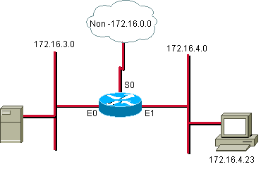
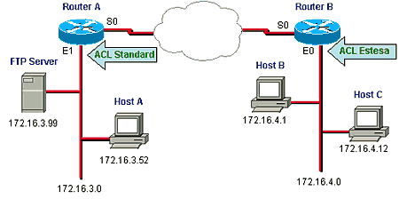
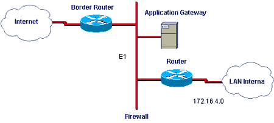

Le ACL estese forniscono una maggiore flessibilità e controllo se paragonate a quelle standard. Le ACL estese, infatti, possono effettuare il controllo non solo sull’indirizzo del mittente, ma anche su quello del destinatario, su uno specifico protocollo, sul numero di porta o su altri parametri.
Il controllo effettuato sul protocollo merita una precisazione; infatti, sebbene le ACL standard permettano di negare o no un'intera suite di protocolli (es. IP, …) (eseguendo il controllo su un’intera rete come fanno le ACL standard, si effettua di conseguenza anche il controllo sul protocollo di comunicazione utilizzato), non permettono di gestirne singolarmente le varie componenti. Al contrario le ACL estese possono effettuare controlli sui singoli protocolli che compongono la suite (es. ICMP, …).
Configurazione di un’ACL Estesa
Per definire un’ACL Estesa sui router Cisco entrare in configuration mode ed eseguire i seguenti passi:
Router(config)# access-list access-list-number {deny
| permit} protocol source source-wildcard destination
destination-wildcard [operator operand] [established] [precedence
precedence] [log]
| Parametri |
Descrizione |
| Access-list-number |
Numero dell’ACL. Ne indica il nome e il tipo (es. da 100 a 199 e da 2000 a 2699 per le ACL IP Estese). E’ importante ricordare che le ACL estese utilizzano access-list number differenti da quelli utilizzati dalle standard, anche se riferiti allo stesso protocollo. |
| Permit |
Permette l’accesso se le condizioni sono soddisfatte |
| Deny |
Nega l’accesso se le condizioni sono soddisfatte |
| Protocol |
Il protocollo di comunicazione; es. IP, TCP, UDP, ICMP, IGRP, … |
| Source e Destination |
Indirizzo del mittente e del destinatario. |
| Souce-wildcard e Destination-wildcard |
La wildcard mask che deve essere applicata all’indirizzo sorgente e a quello di destinazione. |
| Operator operand |
Un operatore logico: lt, gt, eq, neq, range (less than, greater than, equal, not equal, range) e il numero o il nome della porta TCP o UDP (vedi Tabella n.1). Nel caso dell’operatore range occorre inserire due valori operand (es. range 21 25) |
| Established |
(Optional) Si utilizza solo con il protocollo TCP: indica una “estabilished connection”. Il controllo viene effettuato solo se il datagramma ha settato il bit di ACK o RST, mentre non ci sono controlli sul pacchetto iniziale per stabilire la connessione. |
| Precedence |
(Optional) Indica un numero da 0 a 7, che specifica la precedenza del pacchetto rispetto a un altro (Queuing). |
| Log |
(Optional) Attiva i messaggi di log. Questi comprendono l’indirizzo sorgente, il numero di pacchetti e l’esito del controllo (permit o deny). I log vengono generati a intervalli di 5 minuti. |
Router(config-if)# ip access-group access-list number {in|out}
| Parametri |
Descrizione |
| Access-list-number |
Indica il numero della ACL che deve essere legata all’interfaccia. |
| In|out |
Specifica se la ACL va applicata all’interfaccia in entrata o in uscita. Un’ACL in input fa sì che il router applichi prima l’ACL e poi effettui il routing, mentre in output prima il routing e poi l’ACL. Se non è specificato, per default è out. |
Nota: Per cancellare un ACL o rimuoverla da un’interfaccia del Router occorre utilizzare rispettivamente i seguenti comandi:
Router(config)# no access-list access-list number
Router(config-if)# no ip access-group access-list number
E’ consigliabile, prima di cancellare un’ACL, rimuoverla da tutte le interfacce.
| Valore Decimale |
Keyword |
Descrizione |
TCP/UDP |
| 20 |
FTP-DATA |
FTP (data) |
TCP |
| 21 |
FTP |
FTP |
TCP |
| 23 |
TELNET |
Terminal connection |
TCP |
| 25 |
SMTP |
SMTP |
TCP |
| 42 |
NAMESERVER |
Host Name Server |
UDP |
| 53 |
DOMAIN |
DNS |
TCP/UDP |
| 69 |
TFTP |
TFTP |
UDP |
| 70 |
Gopher |
TCP/IP |
|
| 80 |
WWW |
TCP |
Port-Numbers
ESEMPI DI ACL ESTESE

Figura 1
Esempio n. 1: negare il traffico FTP da una determinate rete o sottorete
Questo esempio dimostra come bloccare esclusivamente il traffico FTP.
access-list
101 deny tcp 172.16.4.0 0.0.0.255 172.16.3.0 0.0.0.255 eq 21
access-list 101 permit ip 172.16.4.0 0.0.0.255 any
(access-list 101 deny any any – implicito, non visibile nella lista)
interface
ethernet 0
ip access-group 101
Esempio n. 2: permettere esclusivamente l’invio di E-mail
In questo esempio viene bloccato sull’interfaccia E0 tutto il traffico a esclusione della posta elettronica.
access-list
102 permit tcp 172.16.3.0 0.0.0.255 any eq 25 (o eq smtp)
(access-list 102 deny any any– implicito, non visibile nella lista)
interface
ethernet 0
ip access-group 102 out
ESEMPIO
Si vuole negare all'host B l'accesso al Server FTP e allo stesso tempo negare all'host C qualsiasi accesso alla rete 172.16.3.0.

Figura 2
Sul Router A:
access-list
1 deny host 172.16.4.12
access-list 1 permit any
interface
ethernet 1
ip access-group 1
access-list
101 deny tcp host 172.16.4.15 172.16.3.0 0.0.0.255 eq ftp
access-list 101 permit ip 172.16.4.0 0.0.0.255 any
interface
ethernet 0
ip access-group 101
Esempio pratico: usare le ACL come Firewall
Le ACL, tra gli altri tipi di utilizzo, possono essere adottate per aumentare la sicurezza della rete dagli attacchi provenienti dall’esterno (internet). Questo tipo di configurazione si ottiene configurando opportunamente il border router ovvero il router connesso verso l’esterno. In questo caso, appunto, il router avrà anche funzione di firewall.
Un esempio di tale architettura potrebbe essere il seguente (figura n. 3):

Figura 3
In questa rete si può pensare, con l’utilizzo delle ACL, di forzare tutto il traffico proveniente da Internet verso l’application gateway, mentre il router connesso alla LAN interna accetterà solo i pacchetti provenienti da quest’ultimo.
Bisogna comunque evidenziare che l’utilizzo delle ACL come firewall, sebbene forniscano un livello base di sicurezza, non offrono in alcun modo tutti i vantaggi, la flessibilità e il livello di sicurezza di un “classico” firewall (hardware o software che sia).
Verificare le ACL
Per visualizzare le informazioni sulle ACL si possono utilizzare i seguenti comandi:
– Router> show access-list [access-list number]: mostra il contenuto di tutte le ACL caricate sul router (utilizzando l’opzione access-list number vengono elencate solo le condizioni di una determinata ACL);
– Router> show ip interface [interface-type number] : mostra le informazioni sulle interfacce IP e quindi anche la presenza di un’eventuale ACL collegata all’interfaccia (le opzioni interface-type e number permettono di indicare una determinata interfaccia).
ESEMPIO
Router#show ip interface serial 0
Serial0 is down, line protocol is down
Internet
address is 172.151.12.16/16
Broadcast address is 255.255.0.0
MTU 1500 bytes,
Helper address is not set
Directed broadcast forwarding is disabled
Outgoing access list 10 is set
Inbound access list is not set
Proxy ARP Is Enabled
Security Level Is Default
Split horizon Is Enabled
ICMP redirects are always sent
ICMP unreachables are always sent
ICMP mask replies are never sent
IP fast switching is enabled
IP fast switching on the same interface is enabled
IP Null turbo vector
IP multicast fast switching is enabled
IP multicast distributed fast switching is disabled
Regole fondamentali
Quando si utilizzano le ACL ci sono alcune regole e consigli da seguire:
Studiare bene lo scopo che si vuole ottenere con le ACL;
Inserire le clausole più restrittive e quelle più utilizzate all’inizio;
Posizionare le ACL Standard più vicino al destinatario;
Posizionare le ACL Estese più vicino al mittente;
Poiché non è possibile cambiare l’ordine in cui vengono inserite le varie condizioni di un’ACL, può essere opportuno scriverle con un editor di testo e poi esportarle sul router, avendo cura di salvarne una copia. Questo è utile anche in caso di future modifiche.
Ricordare che le ACL, in ogni caso, richiedono l’utilizzo di risorse aggiuntive al processore del router.